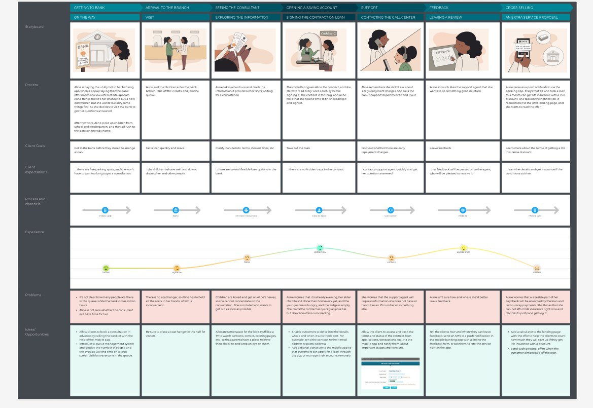
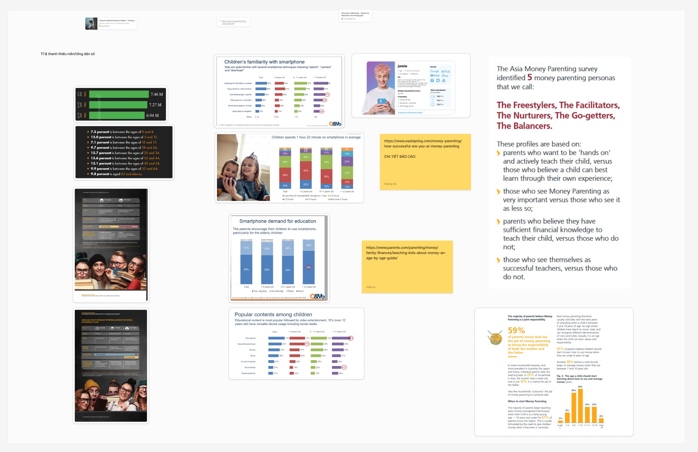
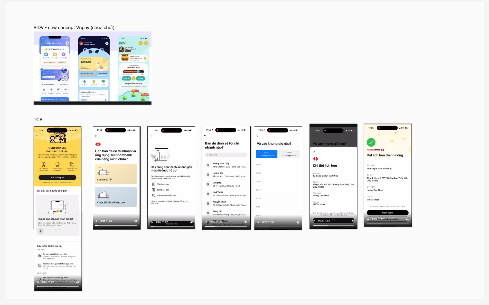
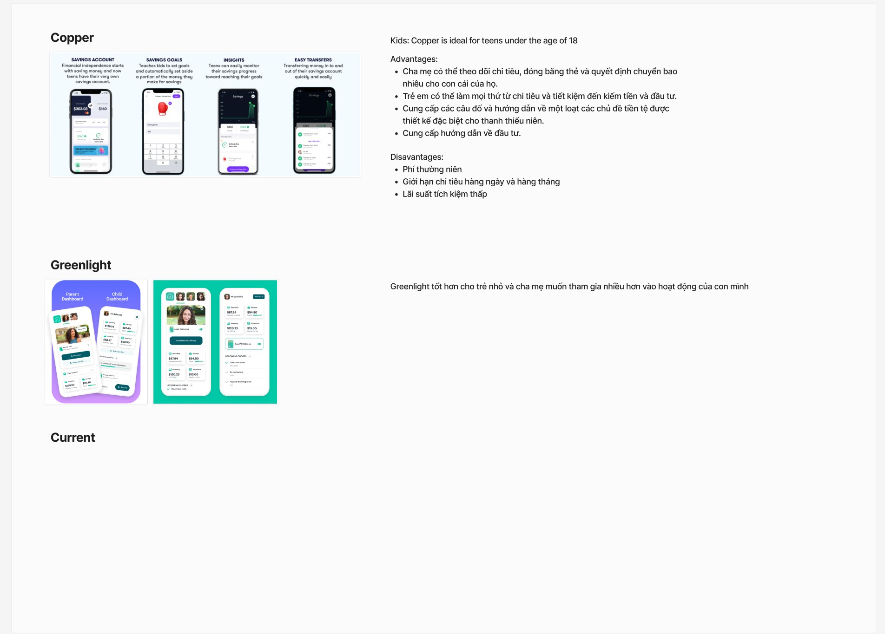
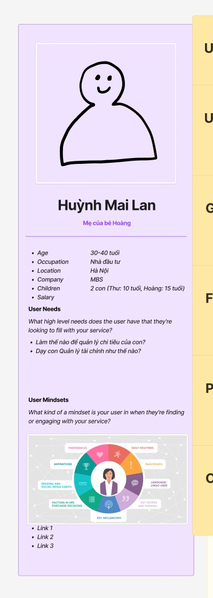
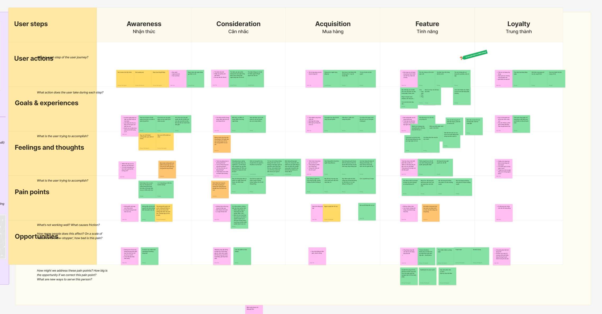
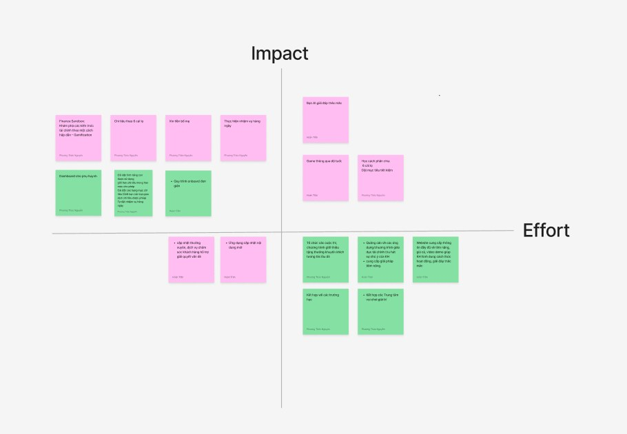
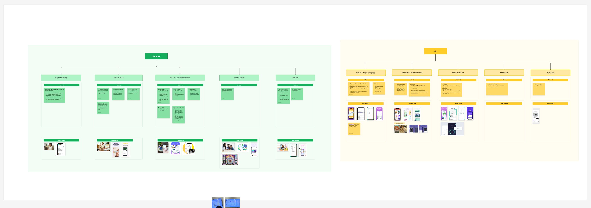

MB Junior

Một ngân hàng số nơi trẻ em học cách tiêu, tiết kiệm và quản lý tiền — còn phụ huynh đồng hành cùng con trên từng bước.A digital bank where kids learn to spend, save and manage money — with parents alongside them every step of the way.
01 — Bối cảnh01 — ContextKhách hàng trung thành bắt đầu từ khi còn nhỏLoyal customers start young
Ý tưởng được phát triển cho cuộc thi sáng kiến nội bộ “Đấu trường Shark Tank MB” với tiêu chí: ngắn gọn, xúc tích và giải pháp hấp dẫn. Câu hỏi đặt ra: MB có thể phục vụ phân khúc trẻ em và phụ huynh như thế nào — vừa giáo dục tài chính, vừa tạo giá trị kinh doanh?
Mình áp dụng quy trình Design Thinking kết hợp tư duy Product Owner để đi từ nghiên cứu thị trường đến roadmap MVP.
The idea was developed for MB’s internal innovation contest “Shark Tank MB”, judged on being concise, sharp and compelling. The question: how could MB serve kids and parents — teaching financial literacy while creating business value?
I combined Design Thinking with a Product Owner mindset to go from market research to an MVP roadmap.
Empathize
Nghiên cứu thị trường, người dùng và đối thủ.Market, user and competitor research.
Define
Persona, journey map, tầm nhìn sản phẩm.Personas, journey map, product vision.
Ideate
Cây tính năng, MoSCoW, ma trận impact / effort.Feature tree, MoSCoW, impact / effort matrix.
Roadmap
Lộ trình MVP và product backlog.MVP roadmap and product backlog.
Measure
Chỉ số hiệu quả và vòng phản hồi.Success metrics and feedback loop.
02 — EmpathizeThị trường, người dùng, đối thủMarket, users, competitors
Nghiên cứu thị trường
- Đánh giá tiềm năng và xu hướng của thị trường “Ngân hàng số cho trẻ em”.
- Dự đoán tệp khách hàng đang có nhu cầu và nhu cầu cụ thể của họ.
Nghiên cứu người dùng
- Tìm hiểu nhu cầu và pain points của phụ huynh và trẻ em.
- Xác định tính năng và lợi ích người dùng mong đợi.
Nghiên cứu đối thủ
- Ngân hàng trong nước và quốc tế, các app như Copper, Greenlight.
- Đánh giá tính năng, business model, điểm mạnh — yếu để tìm cơ hội.
Market research
- Assess the potential and trends of the “digital bank for kids” market.
- Estimate which customers have the need, and what that need is.
User research
- Understand the needs and pain points of parents and kids.
- Identify the features and benefits users expect.
Competitor research
- Domestic and international banks, plus apps such as Copper and Greenlight.
- Evaluate features, business models, strengths and weaknesses to find opportunities.



03 — DefinePersona & hành trìnhPersonas & journey
Từ dữ liệu nghiên cứu, mình xây dựng persona phụ huynh và trẻ em, sau đó vẽ Customer Journey Map qua 5 giai đoạn: Awareness → Consideration → Acquisition → Feature → Loyalty, với user actions, goals, feelings, pain points và opportunities.
Tầm nhìn sản phẩm được chốt bằng Product Vision Board: khách hàng mục tiêu, nhu cầu ưu tiên, sản phẩm và mục tiêu doanh nghiệp.
From the research I built parent and child personas, then mapped a Customer Journey Map across 5 stages: Awareness → Consideration → Acquisition → Feature → Loyalty, covering user actions, goals, feelings, pain points and opportunities.
The product vision was locked in with a Product Vision Board: target customers, prioritised needs, the product and business goals.



04 — IdeateCây tính năng & MoSCoWFeature tree & MoSCoW
Tính năng được nhóm theo mục tiêu giải quyết vấn đề của người dùng, sau đó phân loại bằng MoSCoW (Must / Should / Could / Won’t have) và loại bỏ những gì không mang lại giá trị.
Features were grouped by the user problem they solve, then sorted with MoSCoW (Must / Should / Could / Won’t have), dropping anything that didn’t add value.

05 — Business valueLợi ích cho ngân hàngValue for the bank
Ý tưởng không chỉ tốt cho người dùng mà còn có lý do kinh doanh rõ ràng:
The idea is good for users and has a clear business case:
Mở rộng khách hàngCustomer growth
Tiếp cận phân khúc mới — trẻ em và phụ huynh, xây dựng khách hàng trung thành từ nhỏ.
Reach a new segment — kids and parents — and build loyalty from childhood.
Tăng trưởng doanh thuRevenue growth
Phí dịch vụ, bán chéo sản phẩm cho cả gia đình, tiết kiệm chi phí kênh truyền thống.
Service fees, cross-selling to the whole family, lower cost than traditional channels.
Hình ảnh thương hiệuBrand image
Trách nhiệm xã hội với giáo dục tài chính, vị thế ngân hàng tiên phong.
Social responsibility for financial education; a pioneering bank.
Gắn kết khách hàngEngagement
Liên kết sâu với gia đình, trải nghiệm số độc đáo cho khách hàng trẻ.
Deeper ties with families and a unique digital experience for young customers.
Dữ liệu khách hàngCustomer insight
Hiểu hành vi, thói quen để cá nhân hoá sản phẩm trong tương lai.
Understand behaviour and habits to personalise future products.
Giải ý tưởng sáng tạoCreative Idea Award
Sáng kiến MB Junior — App MB được ghi nhận tại MB Bank.
The MB Junior — App MB initiative was recognised at MB Bank.
06 — RoadmapTừ MVP đến sản phẩmFrom MVP to product
- Xây dựng Product Roadmap theo giai đoạn, đánh giá theo 3 tiêu chí: giải quyết vấn đề cốt lõi, mục tiêu doanh nghiệp, tính khả thi công nghệ.
- Lập Product Backlog cho từng MVP bằng ma trận giá trị / công sức.
- Làm việc chặt chẽ với stakeholder, UI/UX, Developer, Tester khi triển khai backlog.
- Thiết lập chỉ số đánh giá, theo dõi phản hồi và hành vi để cải tiến liên tục.
- Build a phased Product Roadmap, judged on 3 criteria: solving the core user problem, business goals and technical feasibility.
- Create a Product Backlog for each MVP using a value / effort matrix.
- Work closely with stakeholders, UI/UX, developers and testers while delivering the backlog.
- Set success metrics and track feedback and behaviour for continuous improvement.